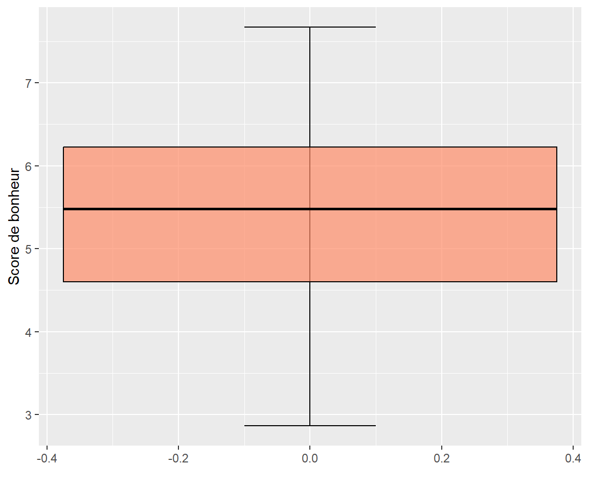
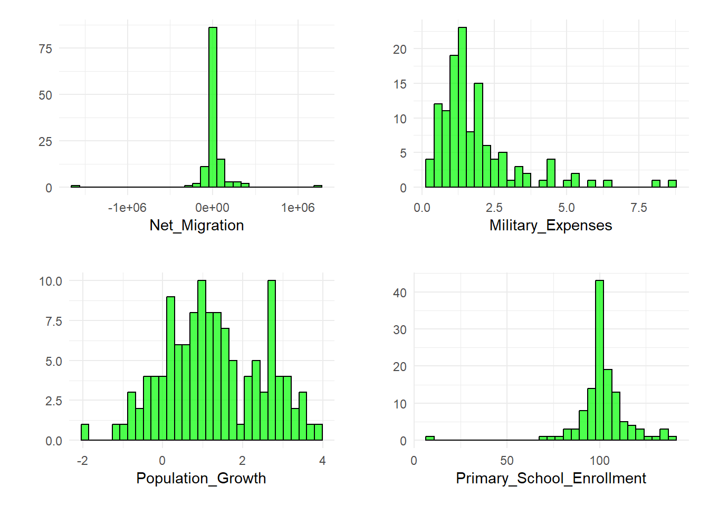
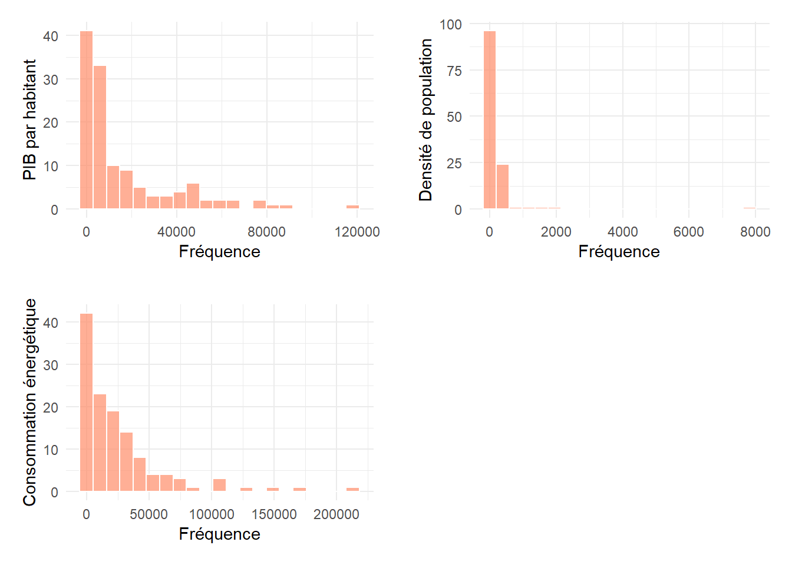
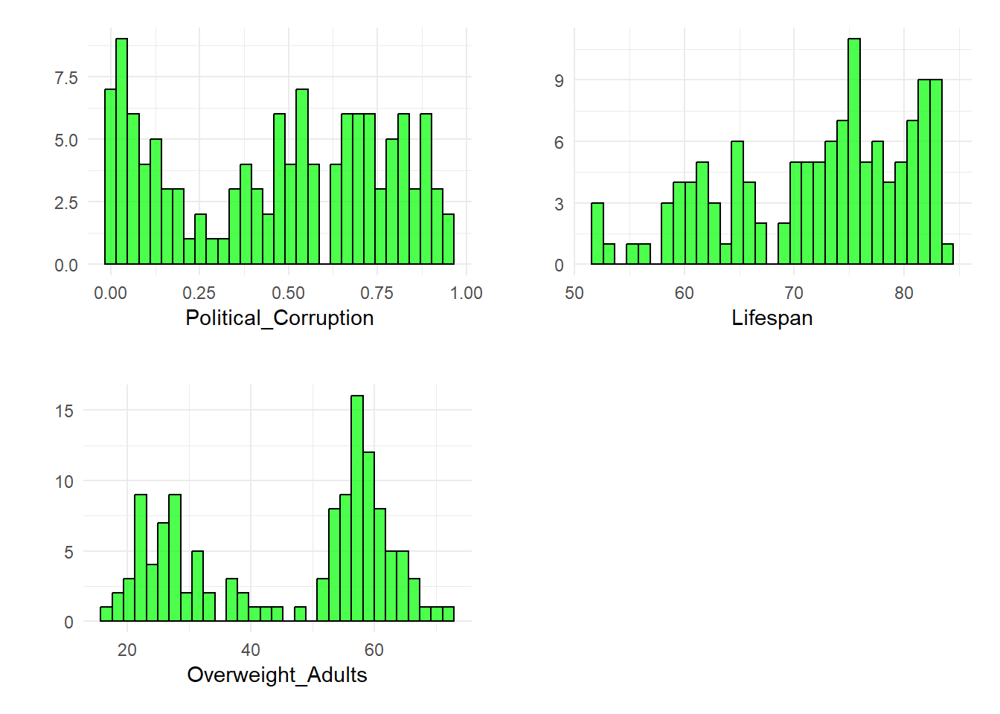
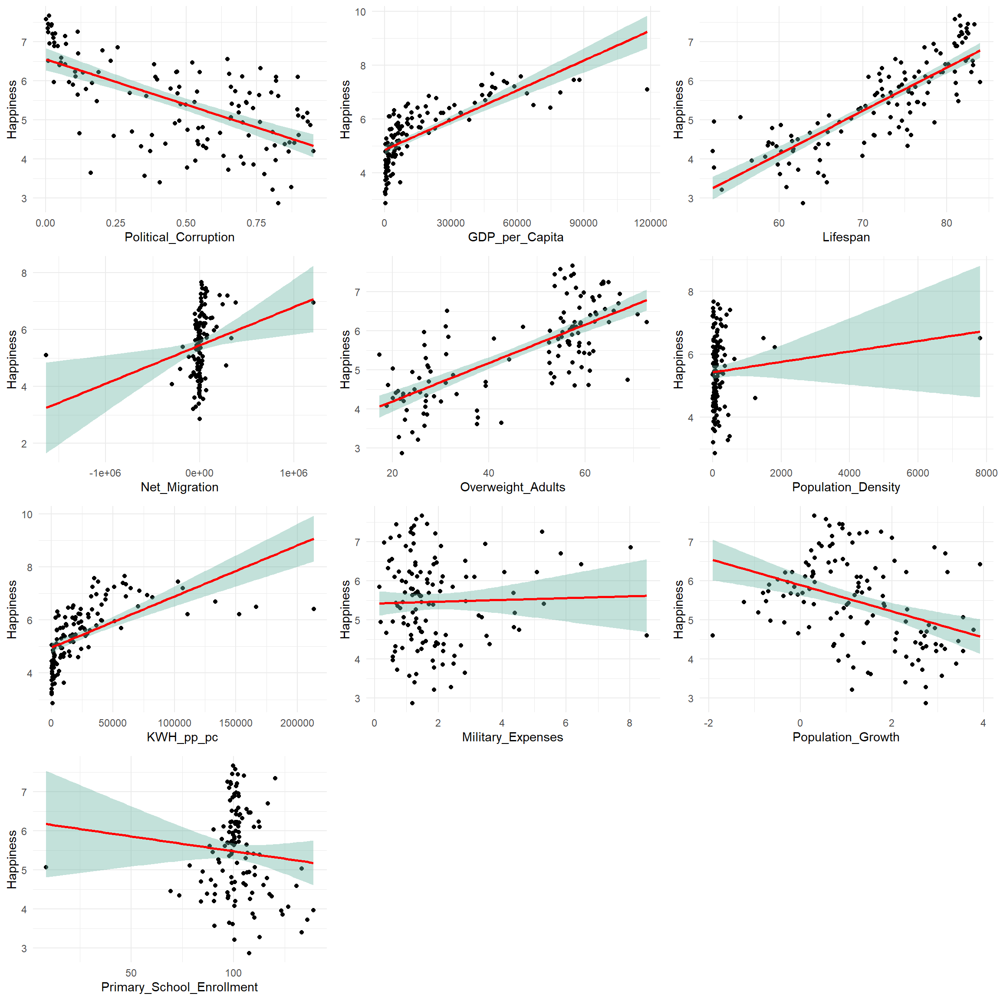
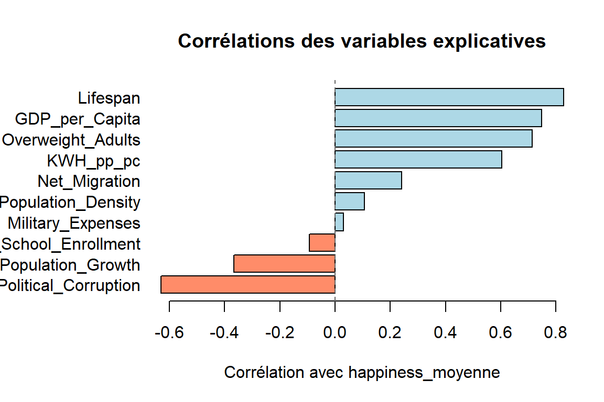

# Enlever les commentaires
# étoffer le plan
# numéroter les graphiques et tableaux
# labeliser les axes
# pas de code R dans le rendu final html juste les graphiques et les commentaires
# stat desc : décrire les résultats : interpréter ou analyser
# selectionner les graphiques pertinents et ne pas tout montrer
# un document de référence
# Ne pas utiliser le code de la variable dans l interprétation
# spécifier nos sélections de variables si ce n'est déjà faitLa source du bonheur
JAOUEN Denis - GEINDRE Colin
Master 1 MAS - Université de Rennes et Master 1 MAS - Université Rennes 2
La rédaction de ce document s’appuie sur l’utilisation d’IA générative, ainsi que sur des blocs de codes fournit sur des forums comme medium ou stack overflow. Les auteur.ice.s de ces blocs sont remercié.e.s en fin de document.
Introduction
Sommes-nous heureux ? L’étions-nous plus auparavant ? Quels modèles de société sont les plus heureux ? Et surtout, quelle est la recette du bonheur ? Questions difficiles, mais qui revêtent une importance capitale pour chacun d’entre nous, notamment dans la recherche économique et sociale actuelle.
Le terme de “Bonheur National Brut” (ou en anglais “Gross National Happiness”) est apparu pour la première fois au Bhutan, à la fin des années 1970. Jigme Singye Wangchuck, alors roi du pays, déclare “Gross National Happiness is more important than Gross Domestic Product”, une phrase qui a influencé le développement de pays, engageant les politiques nationales et locales autour d’une approche holistique de la notion de progrès, moins centrée sur les marqueurs socio-économiques classiques.
Le GNHI, indice de bonheur national développé par le Bhutan, est maintenant utilisé dans de nombreux pays autours du monde. Il est construit sur un ensemble de marqueurs répartis dans 9 pôles considérés comme égaux.
En effet, depuis trop longtemps, l’indice de développement d’un pays a été calculé sur des indices économiques : PIB, croissance, taux d’emploi, etc. Ce choix n’est pas neutre, il sert un système particulier qui ne met pas l’humain ou l’environnement au coeur de ses priorités. Cependant, de plus en plus de sociologues et d’économistes préconisent d’ajouter à ces mesures des marqueurs de bien-être sociétal. Mais comment mesurer le bonheur ? Existe-t-il des bases de données sérieuses et fiables permettant de répondre à nos questions ?
Si le GNHI permet un classement selon un index de bonheur, il est déjà construit sur un postulat, celui que le bonheur est expliqué par un ensemble de facteurs socio économiques définis. Si on veut démontrer ce postulat, on ne peut pas prendre le GNHI comme index de bonheur. Nous avons préféré étudier les résultats du World Happiness Report - de Gallup, étude annuelle construite sur un questionnaire utilisant des échelles de Cantril (la principale étant “Imaginez une échelle à 10 échelons, l’échelon 0 étant la pire vie que vous pourriez imaginer, le 10 la meilleure. Sur quel échelon êtes-vous actuellement ?”). D’autres études utilisent des échelles similaires, les échelles de Likert. On citera notamment l’Integrated Values Surveys, qui est celle avec la plus longue échelle de temps, mais que nous avons rejeté car le nombre de pays est plus restreint, et la formulation des questions a changé plusieurs fois. Les postulats sont alors plus simples, et on se mettra simplement d’accord sur le fait que :
La distance mentale entre les différentes réponses au questionnaire est stable, c’est à dire que nous pouvons faire des mathématiques dessus (calculer des moyennes, etc.). On assume une échelle cardinale et pas simplement ordinale.
Le bonheur est autodéterminé de manière précise. Nous assumons que l’erreur d’auto évaluation de son bonheur personel est une variable aléatoire qui suit une distribution normale. Ainsi, il n’y a pas de biais qui, par exemple, pousserait les personnes malheureuses à s’estimer plus heureuses qu’elles ne le sont.
Ces hypothèses sont cohérentes avec la littérature scientifique, mais restent fortement débattues. En particulier, l’utilisation d’échelle cardinale plutôt qu’ordinale ne change que très peu les résultats des régression, comme l’ont démontré plusieurs économistes (Ferris, 2002). Celle-ci est de plus intuitive, et grandement facilitante pour nos calculs. Par contre, il existe un effet plafond/plancher : il est plus difficile de passer de 9 à 10 que de 5 à 6 ; l’échelle n’est probablement pas cardinale dans les extrèmes. Nous faisons là une approximation consciente. La deuxième hypothèse, elle, est corroborée par la loi des grand nombre (les données de Gallup sont les plus fournies au monde), et par les différentes études sur les marqueurs de bonheur (taux de suicide, expressions faciales…), qui tendent à démontrer que les sujets ne mentent pas sur leur bonheur. Mais certaines cultures valorisent (latino-américaines) ou dévalorisent (Japon, Corée) socialement de se dire heureux, ce qui peut tirer les résultats vers le haut ou vers le bas. De plus, le tapis roulant hédonique, ou l’adaptation à ses conditions, ainsi que la désirabilité sociale qui pousse les répondants à paraître normaux aux yeux des enquêteurs, peuvent créer une homogénisation des résultats.
Pour contrer ces biais, on introduit parfois des effets fixes “pays”, comme les membres de l’OCDE, les pays Latino-américains, etc.
Un dernier problème que nous voulons aborder est celui de la barrière de la langue. Est-ce que tout le monde à la même perception du “bonheur”, ou est-ce que les mots, le langage utilisé pour définir cette notion change au point que la langue influence les réponses ? Mais de nombreuses études ont montré que l’on arrivait relativement bien à apprécier le bonheur des autres, quelque soit notre pays d’origine et celui de l’autre, impliquant que le bonheur revêt une définition globale relativement comprise partout (voir Sandvil, 1993 et Diner & Lucas, 1999).
Nous nous attendons à voir une corrélation entre l’indice de bonheur du WHR, et différents indicateurs socio-économiques. De plus, nous nous attendons a voir les biais culturels sus-cités.
Plan
- Introduction
- Cadre méthodologique
- Modèle de régression
- Corrections et transformations de variables
- Analyse des données
- Cadre des données
- Pré-traitement des données
- Données manquantes
- Suppression des doublons
- Recherche des outliers
- Transformation des données
- Analyses descriptives univariées
- Variables explicatives
- Variable cible
- Analyses descriptives multivariées
- Corrélations entre variables
- Analyse des interactions
- Résultats et discussion
- Modélisation principale
- Robustesse des résultats
- Analyses complémentaires
- Conclusion
- Bibliographie
Cadre méthodologique
Le cadre méthodologique général est celui de la régression linéaire, avec une estimation des moindres carrés ordinaires. En fonction des données, des corrections éventuelles (white, MCG, etc.) pourront être envisagées. Pour chaque partie, une méthodologie plus précise sera discutée.
Modèle de régression
Voici la formulation mathématique du modèle linéaire estimé par moindres carrés ordinaires (MCO), en notation matricielle. \[ y = X\beta + \varepsilon \]
Dans notre cas, le modèle est formulé ainsi :
\[ \begin{align} Happiness &= \beta_0\\ &+ \beta_1 Political\_Corruption + \beta_2 GDP\_per\_capita + \beta_3 Lifespan\\ &+ \beta_4 Net\_Migration + \beta_5 Overweight\_Adults + \beta_6 Population\_density \\ &+ \beta_7 KWH\_pp\_pc + \beta_8 Military\_Expenses + \beta_9 Population\_Growth \\ &+ \beta_{10} Primary\_School\_Enrollment + \beta_{11} OCDE\\ &+ \varepsilon \end{align} \]
On estime alors les paramètres via la méthode des moindres carrés ordinaires : \[ \hat\beta{MCO} = \operatorname*{arg\,min}\beta \sum{\varepsilon_i^2} = (X'X)^{-1}X'y \]
Cette méthode assume certaines hypothèses :
Linéarité : la relation entre les variables explicatives et la variable cible est linéaire. (et la variable cible est continue)
Exogénéité : les variables explicatives ne sont pas corrélées avec le terme d’erreur, \(E(X'\varepsilon) = 0\).
Homoscédasticité : la variance des erreurs est constante, \(\operatorname{Var}(\varepsilon) = \sigma^2 I\).
Normalité : les résidus sont distribuées normalement, \(\varepsilon \sim \mathcal{N}(0, \sigma^2)\).
Absence d’autocorrélation des variables explicatives : les variables explicatives ne sont pas corrélées entre elles.
Absence d’autocorrélation des résidus, \(\operatorname{Cov}(\varepsilon_i, \varepsilon_j) = 0\) pour \(i \neq j\).
Sous homoscédasticité : \(\operatorname{Var}(\hat\beta{MCO}) = \sigma^2 (X'X)^{-1}\)
En présence d’hétéroscédasticité, la variance générale s’écrit avec la matrice diagonale \(Ω\), \((Var(ε)=Ω)\) : \(\operatorname{Var}(\hat\beta{MCO}) = (X'X)^{-1} X' \Omega X (X'X)^{-1}\)
Corrections et transformations de variables
Exemples de transformations de variables et modèles correspondants (interprétations rapides) :
- Modèle linéaire en niveaux : \(y_i = \alpha + \beta x_i + u_i\). Effet absolu de x sur y.
- Log‑niveau (log(x) explicative) : \(y_i = \alpha + \beta \log(x_i) + u_i\). β = variation absolue de y pour une variation proportionnelle de x (approx. effet semi‑élasticité).
- Log‑log (log(y) vs log(x)) : \(\log(y_i) = \alpha + \beta \log(x_i) + u_i ]\). β = élasticité (pourcentage de y lorsque x varie de 1%).
- Quadratique / polynôme : \(y_i = \alpha + \beta_1 x_i + \beta_2 x_i^2 + u_i\). Permet capturer non‑linéarités (effets en U, concavité).
- Effet interactif : \(y_i = \alpha + \beta_1 x_i + \beta_2 D_i + \beta_3 (x_i \times D_i) + u_i\). Effet de x différent selon la modalité D. On étudie les effets croisés de la même façon.
Analyse des données
Cadre des données
Nous avons tenté d’avoir le cadre le plus global possible. Ainsi nous étudions les pays du monde entier, en particulier les 147 référencés par le world happiness report. Après sélection de nos variables, il nous reste 125 pays à étudier.
Ayant des données allant de 1789 à 2024 et beaucoup de données manquantes, nous avons choisi de traiter les moyennes des données disponibles de 2013 à 2023. Certains jeux de données s’achèvent avant 2023, nous avons donc fait leurs moyennes jusqu’à la dernière année recensée. Cette décision a été motivée par notre envie de tirer des conclusions les plus larges possibles.
| Code de la série | Définition | Unité | Source |
|---|---|---|---|
| Code | Le code du pays | Caractères | - |
| Political_Corruption | La moyenne de 2013 à 2023 d’un index de corruption politique allant de 0 à 1 | Index allant de 0 à 1 | World Bank |
| GDP_per_capita | La moyenne de 2013 à 2023 du PIB par habitant | En dollar américain par habitant | World Bank |
| Lifespan | La moyenne de 2013 à 202O de l’espérance de vie à la naissance | En années | World Bank |
| Net_Migration | La moyenne de 2013 à 2020 de la migration nette | En nombre de personnes | World Bank |
| Overweight_Adults | La moyenne de 2013 à 2016 de la proportion d’adulte de 18 ans et plus dont l’IMC est supérieur à 25. | En pourcentage | World Bank |
| Population_density | La moyenne de 2013 à 2021 de la densité de population en nombre d’habitant à la mi-année par kilomètres carrés | En habitant par kilomètre carré | World Bank |
| KWH_pp_pc | La moyenne de 2013 à 2023 de la consommation en kilowattheure par personne | En kilowattheure par personne | World Bank |
| Military_Expenses | La moyenne de 2013 à 2023 du pourcentage du PIB dédié à la dépense militaire | En pourcentage du PIB | Our World in Data |
| Population_Growth | La moyenne de 2013 à 2023 de la croissance en pourcentage de la population | En pourcentage | Our World in Data |
| Primary_School_Enrollment | La moyenne de 2013 à 2022 du nombre d’étudiant inscrits en école primaire divisé par la population du groupe d’age multiplié par 100 | En pourcentage | World Bank |
| OCDE | Une indicatrice avec 1 si le pays est membre de l’OCDE et 0 sinon | Indicatrice | OCDE |
| Happiness | La moyenne de 2013 à 2023 de l’indice du bonheur calculé par le World Happiness Index | Index allant de 0 à 10 | World Happiness Report |
Prétraitement et nettoyage des données
Pour éviter un maximum de données manquantes, nous avons effectuer des moyennes depuis 2013 et jusqu’à un maximum de 2023 sur toutes les données étudiées. Cela nous permet aussi d’atténuer les tendances qui ont pu se passer dans des temps plus courts sur cette décennie.
Nous avons sélectionné les jeux de données que nous avons trouvé nous paraissant les plus intéressant. Certains ont du être écartés du jeu de donnée final dû à un manque de donnée. En effet plusieurs pays n’étaient pas recensés dans les données et notre système de moyenne ne pouvait les ramener dans le jeu de donnée.
Analyse descriptive univariée des données
Statistiques descriptives
===================================================================================
Statistic Mean St. Dev. Min Median Max
-----------------------------------------------------------------------------------
Political_Corruption 0.47 0.30 0.002 0.50 0.95
GDP_per_Capita 16,670.31 22,709.09 230.93 6,175.42 118,437.30
Lifespan 72.09 8.39 52.10 74.11 83.99
Net_Migration 8,166.03 201,494.10 -1,632,118.00 85.12 1,206,926.00
Overweight_Adults 45.86 16.31 17.38 54.40 72.78
Population_Density 211.95 729.00 1.99 80.05 7,814.10
KWH_pp_pc 25,913.75 35,190.72 224.22 15,016.75 213,333.10
Military_Expenses 1.89 1.46 0.16 1.46 8.53
Population_Growth 1.28 1.22 -1.91 1.14 3.93
Primary_School_Enrollment 101.71 13.83 8.45 100.72 138.91
Happiness 5.46 1.12 2.86 5.48 7.67
-----------------------------------------------------------------------------------On voit tout de suite, par comparaison de la moyenne et de la médiane de chaque variable certaines tendances : le PIB par habitant contient des individus qui tirent la moyenne vers le haut, idem pour la migration, le KWH par habitant et la densité de population.
En étudiant les minimums, maximums, étendues et écarts-type de ces quatre variables, on remarque qu’il ne s’agit probablement que de quelques individus dont les valeurs très fortes déforment les moyennes. Par exemple, la densité de population a une étendue de 7812, une médiane de 80 et un écart -type de seulement 65. On s’attend à observer dans ces variables des petits groupes d’individus aux valeurs très élevées.
Un effet inverse et de moindre importance peut aussi être constaté quand au surpoids des adultes. On voit que la moyenne est légèrement tirée vers le bas.
Les dépenses militaires ayant une moyenne légèrement plus élevée que la médiane et un écart-type faible malgré un maximum assez élevé, on s’attend à observer très peu d’individus avec des valeurs très élevées mais une concentration importante des individus autour de la médiane.
Le reste des variables ont l’air d’être peu dispersées. On peut s’atttendre à y voir une répartition normale des valeurs.

Figure 1 : Histogramme du score de bonheur

Figure 2 : Boxplot du score de bonheur
A première vue, l’histogramme nous indique que l’indice du bonheur semble difficilement suivre une loi normale. On repère cela à une certaine symétrie et une concentration d’indivus autour du centre, particulièrement deux pics : l’un proche de 4,5 et le second de 6.
Le boxplot du bonheur présente une répartition très équilibrée de notre variable explicative. On n’y repère pas de tendances particulières si ce n’est que les deux quarts les moins heureux sont légèrement plus grands.
Analyse de chaque variable explicative

Figure 3 : Histogrammes sélectionnés (Population growth, Primary school enrollment, Military expenses, Net migration)
Au vu de la symétrie de leurs histogrammes on peut considérer que la croissance de la population, l’inscription à l’école primaire, les dépenses militaires et la migration peuvent suivre des lois normales.

Figure 4 : Histogrammes sélectionnés (GDP per capita, Population density, KWH per capita)
La consommation d’énergie, la densité de population et le PIB par habitant semblent suivre des lois inverses.

Figure 5 : Histogrammes sélectionnés (Political corruption, Lifespan at birth, Overweight)
La corruption politique, le surpoids et l’espérance de vie ne semblent pas suivre des lois classiques.
On remarque immédiatement les individus les plus aberrants qui referont surface dans les graphiques suivants et dont nous parlerons plus tard:
On repère dans l’histogramme de l’inscription à l’école primaire un individu atypique proche de 0, il s’agit de la Somalie avec moins de 9% d’inscrits.
De la même manière dans l’histogramme de la densité de population, on repère Singapour avec une densité titanesque de près de 8000 habitants au km2.
Dans l’histogramme de la migration, le Pakistan apparait tout à gauche avec plus d’1,5 million de migration nettte négative et les Etats-Unis tout à droite avec plus d’1,2 million de migration nette positive.
Le Luxembourg est l’individu tout à droite de l’histogramme du PIB par habitant.
Et le Qatar est l’individu tout à droite dans l’histogramme de la consommation énergétique.
Analyse descriptive bivariée des données

Figure 6 : Corrélations des variables explicatives avec l’indice de bonheur
On remarque ici les variables les plus et les moins corrélées à l’indice du bonheur. L’espérance de vie, le PIB/hab, le surpoids et la consommation énergétique sont très corrélées positivement avec l’indice de bonheur tandis que la corruption politique et la croissance de population semblent elles être corrélées négativement.
Les autres variables ne semblent pas être corrélées fortement à l’indice de bonheur.

Figure 7 : Nuages de points entre chaque variable explicative et l’indice de bonheur
A nouveau, on retrouve les individus aberrants repérés plus tôt qui déforment complètement les graphiques sur l’inscription à l’école primaire, la densité de population et la migration nette. Il serait bon de voir la répartition de ces graphes sans ces individus.
Dans le graphe du surpoids par l’indice de bonheur, on repère comme dans l’histogramme du surpoids deux pics de surreprésentation.
La entre l’indice de bonheur et le PIB/hab semble logarithmique avec une concentation forte des individus vers les valeurs les plus faibles. De même pour le graphe de la consommation énergétique.
On doute de la linéarité entre l’indice de bonheur et la corruption politique car le nuage de point est très dispersé. De même pour la croissance de la population.
Finalement, on remarque une certaine linéarité positive entre l’indice de bonheur et l’espérance de vie à la naissance, les points semblent bien décrire une droite.

Figure 8 : Graphiques sans outliers identifiés (Population density, Primary school enrollment, Migration)
Ici, retirer les individus les plus aberrants ne permet pas pour autant d’obtenir une linéarité de la relation entre l’indice de bonheur et les variables étudiées. Au contraire : tout comme les dépenses militaires, ces variables ne semblent pas corrêlées à notre score de bonheur.

Figure 9 : Transformations logarithmiques et leurs relations avec Happiness
Appliquer un logarithme au PIB par habitant et à la consommation énergétique permet un lien linéaire très clair avec l’indice de bonheur. La relation est moins forte mais c’est aussi le cas avec la migration nette, sans même retirer les individus aberrants qui sont bien projetés sur la droite. Mais attention : appliquer une transformation logarithmique à la Migration nous fait perdre tous les individus pour lesquels celle-ci est négative, ce uqi est un trop gros biais.
Aucune modification classique (exp, log, carré) ne donne une meilleure linéarité aux autres variables (j’ai tout testé).

Figure 10 : Boxplots des variables explilcatives
Un affichage en boîtes à moustache permet de repérer très facilement les outliers, ces individus qui étirent fortement la distribution. En effet, sur la figure 10, on peut comparer une distribution classique, celle de la corruption politique, avec des distribution perturbée par des individus extrêmes (PIB, Migration, Densité de population, dépenses militaires ou Taux de scolarisation par exemple).

Figure 11 : Boxplot du bonheur en fonction de l’appartenance à l’OCDE
Il est clair que les pays membres de l’OCDE ont un bonheur bien plus élevé que les non-membres.
Analyse et discussion des résultats
Modélisation principale
Nous allons commencer par comparer deux modèles. Le premier, que l’on appellera reglin, correspond à la régréssion linéaire complète, sans transformation de variable, et le deuxième reglog, à une régression avec une transformation par logarithme sur les variables de la figure 9.
--- Résumé du modèle (reg1) ---
===========================================================
Dependent variable:
----------------------------
Happiness
(1) (2)
-----------------------------------------------------------
Political_Corruption 0.32 0.51**
(0.26) (0.26)
KWH_pp_pc 0.0000
(0.0000)
GDP_per_Capita 0.0000***
(0.0000)
log(KWH_pp_pc) 0.06
(0.10)
log(GDP_per_Capita) 0.38***
(0.12)
Lifespan 0.06*** 0.04***
(0.01) (0.01)
Net_Migration -0.0000 -0.0000
(0.0000) (0.0000)
Overweight_Adults 0.02*** 0.01*
(0.005) (0.005)
Population_Density -0.0000 0.0000
(0.0001) (0.0001)
Military_Expenses -0.09** -0.09**
(0.04) (0.04)
Population_Growth 0.04 0.13***
(0.05) (0.05)
OCDE1 0.40** 0.44***
(0.17) (0.16)
Primary_School_Enrollment -0.01** -0.01*
(0.003) (0.003)
Constant 0.76 -1.41*
(0.85) (0.80)
-----------------------------------------------------------
Observations 125 125
R2 0.81 0.83
Adjusted R2 0.79 0.81
Residual Std. Error (df = 113) 0.51 0.49
F Statistic (df = 11; 113) 44.23*** 49.40***
===========================================================
Note: *p<0.1; **p<0.05; ***p<0.01Nos deux modèles expliquent plus de 80% de la variance de l’indice de bonheur. Cependant, le modèle avec transformation logarithmique (reglog) a un R² ajusté légèrement supérieur, ce qui indique une meilleure capacité explicative. Nos variables significatives, par ordre de significativité, sont l’espérance de vie, le surpoids, le PIB par habitant, la dépense militaire, la participation à l’OCDE et l’inscription à l’école primaire.
Présentation et interprétation des résultats obtenus : utiliser un tableau récapitulatif des modèles principaux testés
TESTER DES MODELES DIFFERENTS
COMPARAISON VISU
TEST D’ANOVA ENTRE CES MODELES
EN BACKWARD, trifouiller avec les AIC
Robustesse des résultats

On voit que certaines variables sont corrélées, source de problème pour notre régression à venir bien qu’aucune ne passe le seuil critique de 0,8. En voici les plus importantes :
La corruption politique est corrélée négativement avec le PIB/hab à -0,72.
Le PIB/hab a une correlation positive à 0,72 avec la consommation énergétique et à 0,67 avec l’espérance de vie.
L’espérance de vie est corrélée positivement avec le surpoids à 0,72.
On a donc quatre variables qui semblent corrélées entre elles. Utilisons l’indice du VIF pour s’assurer du problème :
VIF
====================================================================
Political_Corruption KWH_pp_pc GDP_per_Capita Lifespan Net_Migration
--------------------------------------------------------------------
2.88 4.03 4.24 4.22 1.20
--------------------------------------------------------------------
========================================================================
Overweight_Adults Population_Density Military_Expenses Population_Growth
------------------------------------------------------------------------
2.91 1.63 1.44 1.86
------------------------------------------------------------------------
==============================
OCDE Primary_School_Enrollment
------------------------------
2.59 1.05
------------------------------Le VIF, indice de multicolinéarité, est supérieur à 4 pour la consommation énergétique, le PIB par habitant et l’espérance de vie. On considère 4 comme seuil critique et on admet un problème de multicolinéarité à résoudre prochainement.
[1] "Test de Breusch-Pagan :"
studentized Breusch-Pagan test
data: reg1
BP = 7.3524, df = 11, p-value = 0.7699[1] "Coefficients avec erreurs robustes (HC1) :"
t test of coefficients:
Estimate Std. Error t value Pr(>|t|)
(Intercept) 7.5573e-01 8.3503e-01 0.9050 0.3673694
Political_Corruption 3.2122e-01 2.7840e-01 1.1538 0.2510089
KWH_pp_pc 3.0159e-06 2.7847e-06 1.0830 0.2811126
GDP_per_Capita 1.2367e-05 4.5017e-06 2.7472 0.0069977 **
Lifespan 5.8158e-02 1.1487e-02 5.0630 1.618e-06 ***
Net_Migration -1.5690e-07 1.5479e-07 -1.0136 0.3129305
Overweight_Adults 1.7542e-02 4.9857e-03 3.5184 0.0006265 ***
Population_Density -1.7820e-05 5.7272e-05 -0.3111 0.7562685
Military_Expenses -9.4878e-02 4.1147e-02 -2.3058 0.0229438 *
Population_Growth 3.8380e-02 5.2800e-02 0.7269 0.4687885
OCDE1 4.0143e-01 1.5271e-01 2.6287 0.0097629 **
Primary_School_Enrollment -6.8018e-03 2.7886e-03 -2.4392 0.0162767 *
---
Signif. codes: 0 '***' 0.001 '**' 0.01 '*' 0.05 '.' 0.1 ' ' 1Avec une p-value aussi haute au test de Breusch-Pagan, on choisit de ne pas rejeter l’hypothèse nulle : on considère bien que les résidus sont homoscédastiques, c’est à dire que la variance est constante.
Je ne sais pas comment lire le test HC1 de lmtest


Le premier graphique nous montre que les résidus semblent suivre grossièrement une loi normale et on ne repère pas de forme spécifique dans le graphe des résidus par rapport aux valeurs ajustées.
Cependant, les résidus ne sont pas disposés sur la droite définie par les quantiles théoriques. Pour s’assurer de leur normalité, on va procédé à un test de normalité.
[1] "Test de Shapiro-Wilk :"
Shapiro-Wilk normality test
data: reg1$residuals
W = 0.9878, p-value = 0.3309La p-value du test étant de 0,3309, on conserve l’hypothèse nulle stipulant que les résidus suivent une loi normale.
#Autocorrelation des résidus
print('Test de Durbin-Watson :')[1] "Test de Durbin-Watson :"dwtest(reg1)
Durbin-Watson test
data: reg1
DW = 1.9439, p-value = 0.3861
alternative hypothesis: true autocorrelation is greater than 0Comme précédemment, on conserve ici l’hypothèse nulle : il n’y a pas d’autocorrélation des résidus.
On a donc bien ici des résidus homoscédastiques, non-corrélés entre eux et normaux mais une certaine multicolinéarité de nos variables explicatives. Dans la section suivante, on va donc essayer de perfectionner le modèle en commençant par résoudre ces problèmes de multicolinéarité.
Analyses complémentaires
Call:
lm(formula = Happiness ~ Political_Corruption + log(KWH_pp_pc) +
log(GDP_per_Capita) + Lifespan + log(Net_Migration) + Overweight_Adults +
Population_Density + Military_Expenses + Population_Growth +
OCDE + Primary_School_Enrollment, data = data)
Residuals:
Min 1Q Median 3Q Max
-1.19914 -0.23147 0.03844 0.25981 1.05034
Coefficients:
Estimate Std. Error t value Pr(>|t|)
(Intercept) -1.264e+00 1.382e+00 -0.915 0.3647
Political_Corruption 4.428e-01 4.290e-01 1.032 0.3069
log(KWH_pp_pc) -2.447e-03 1.509e-01 -0.016 0.9871
log(GDP_per_Capita) 3.565e-01 1.632e-01 2.184 0.0336 *
Lifespan 4.747e-02 2.182e-02 2.175 0.0343 *
log(Net_Migration) 2.959e-02 4.165e-02 0.710 0.4807
Overweight_Adults 6.363e-03 9.088e-03 0.700 0.4871
Population_Density 6.693e-06 8.230e-05 0.081 0.9355
Military_Expenses -5.733e-02 5.861e-02 -0.978 0.3327
Population_Growth 5.567e-02 8.615e-02 0.646 0.5211
OCDE1 4.319e-01 2.483e-01 1.739 0.0880 .
Primary_School_Enrollment -6.146e-03 4.672e-03 -1.315 0.1942
---
Signif. codes: 0 '***' 0.001 '**' 0.01 '*' 0.05 '.' 0.1 ' ' 1
Residual standard error: 0.5085 on 51 degrees of freedom
(62 observations effacées parce que manquantes)
Multiple R-squared: 0.8366, Adjusted R-squared: 0.8013
F-statistic: 23.73 on 11 and 51 DF, p-value: 2.601e-16
Call:
lm(formula = Happiness ~ log(GDP_per_Capita), data = data)
Residuals:
Min 1Q Median 3Q Max
-1.90631 -0.34462 0.00494 0.30108 1.34355
Coefficients:
Estimate Std. Error t value Pr(>|t|)
(Intercept) -0.21654 0.28724 -0.754 0.452
log(GDP_per_Capita) 0.64917 0.03235 20.065 <2e-16 ***
---
Signif. codes: 0 '***' 0.001 '**' 0.01 '*' 0.05 '.' 0.1 ' ' 1
Residual standard error: 0.5459 on 123 degrees of freedom
Multiple R-squared: 0.766, Adjusted R-squared: 0.7641
F-statistic: 402.6 on 1 and 123 DF, p-value: < 2.2e-16[1] "######################### OCDE ##########################"
Call:
lm(formula = Happiness ~ log(GDP_per_Capita) + OCDE, data = data)
Residuals:
Min 1Q Median 3Q Max
-1.82314 -0.32299 0.05077 0.30295 1.35774
Coefficients:
Estimate Std. Error t value Pr(>|t|)
(Intercept) 0.2015 0.3508 0.574 0.567
log(GDP_per_Capita) 0.5927 0.0424 13.977 <2e-16 ***
OCDE1 0.2971 0.1466 2.026 0.045 *
---
Signif. codes: 0 '***' 0.001 '**' 0.01 '*' 0.05 '.' 0.1 ' ' 1
Residual standard error: 0.5392 on 122 degrees of freedom
Multiple R-squared: 0.7736, Adjusted R-squared: 0.7699
F-statistic: 208.4 on 2 and 122 DF, p-value: < 2.2e-16[1] "######################## Lifespan ########################"
Call:
lm(formula = Happiness ~ log(GDP_per_Capita) + Lifespan, data = data)
Residuals:
Min 1Q Median 3Q Max
-1.62190 -0.31382 0.01892 0.32894 1.39670
Coefficients:
Estimate Std. Error t value Pr(>|t|)
(Intercept) -1.26690 0.44396 -2.854 0.00508 **
log(GDP_per_Capita) 0.47823 0.06444 7.421 1.72e-11 ***
Lifespan 0.03532 0.01164 3.035 0.00294 **
---
Signif. codes: 0 '***' 0.001 '**' 0.01 '*' 0.05 '.' 0.1 ' ' 1
Residual standard error: 0.5286 on 122 degrees of freedom
Multiple R-squared: 0.7824, Adjusted R-squared: 0.7788
F-statistic: 219.3 on 2 and 122 DF, p-value: < 2.2e-16[1] "#################### OCDE + Lifespan #####################"
Call:
lm(formula = Happiness ~ log(GDP_per_Capita) + Lifespan + OCDE,
data = data)
Residuals:
Min 1Q Median 3Q Max
-1.54481 -0.30706 0.05957 0.30636 1.32977
Coefficients:
Estimate Std. Error t value Pr(>|t|)
(Intercept) -0.84712 0.48458 -1.748 0.08297 .
log(GDP_per_Capita) 0.42560 0.06870 6.195 8.31e-09 ***
Lifespan 0.03486 0.01149 3.033 0.00296 **
OCDE1 0.28859 0.14198 2.033 0.04428 *
---
Signif. codes: 0 '***' 0.001 '**' 0.01 '*' 0.05 '.' 0.1 ' ' 1
Residual standard error: 0.5219 on 121 degrees of freedom
Multiple R-squared: 0.7896, Adjusted R-squared: 0.7844
F-statistic: 151.4 on 3 and 121 DF, p-value: < 2.2e-16Transformation de variables / effets non linéaires LOG / CARRE / EFFETS CROISES
Changement structurel
Effets croisés de variables
Conclusion générale et perspectives
Rappel de la problématique et de la méthodologie
Synthèse des résultats principaux
Contributions du mémoire, apports scientifiques et/ou applicatifs
Perspectives d’amélioration ou de recherche future
possible sources d’erreur : mauvaises mesures des données, simultanéité, variables omises
Bibliographie - Source des données
https://tex.stackexchange.com/questions/27028/what-is-the-difference-between-newline-and